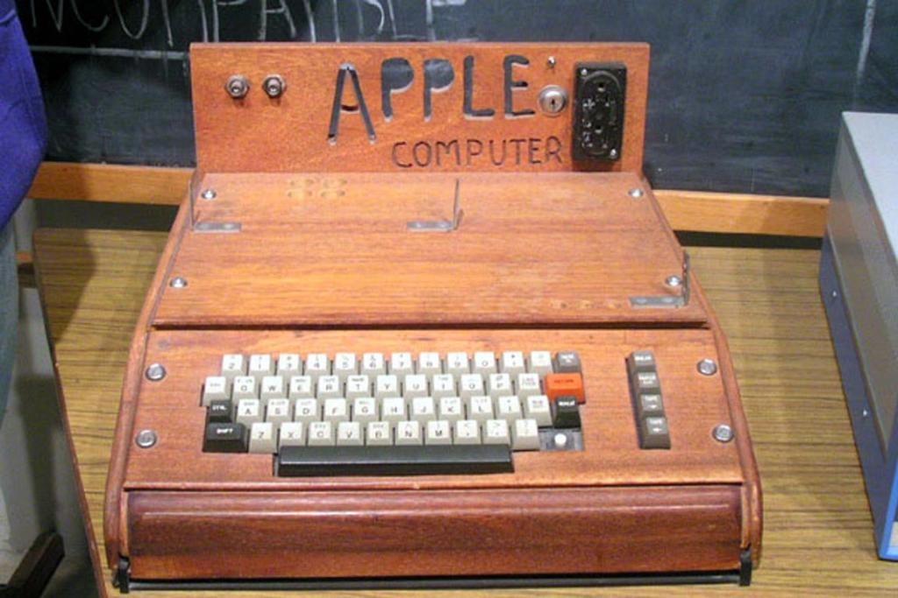
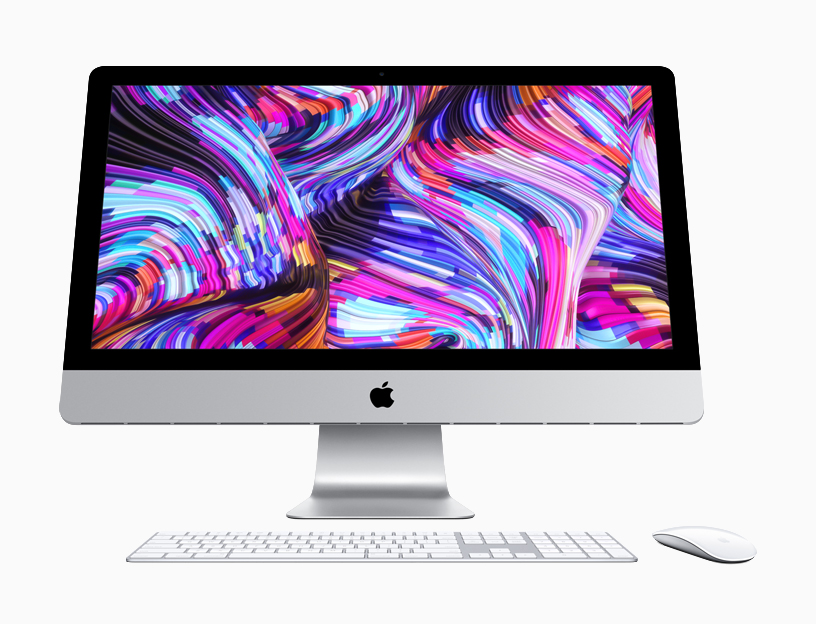

Apple Computers, Inc. was founded on April 1, 1976,
by college dropouts Steve Jobs and Steve Wozniak, who
rought to the new company a vision of changing the
way people viewed computers. Jobs and Wozniak wanted
to make computers small enough for people to have them
in their homes or offices. Simply put, they wanted a
computer that was user-friendly. Jobs and Wozniak
started out building the Apple I in Jobs' garage
and sold them without a monitor, keyboard, or casing
(which they decided to add on in 1977). The Apple II
revolutionized the computer industry with the introduction
of the first-ever color graphics. Sales jumped from $7.8
million in 1978 to $117 million in 1980, the year Apple went public.

